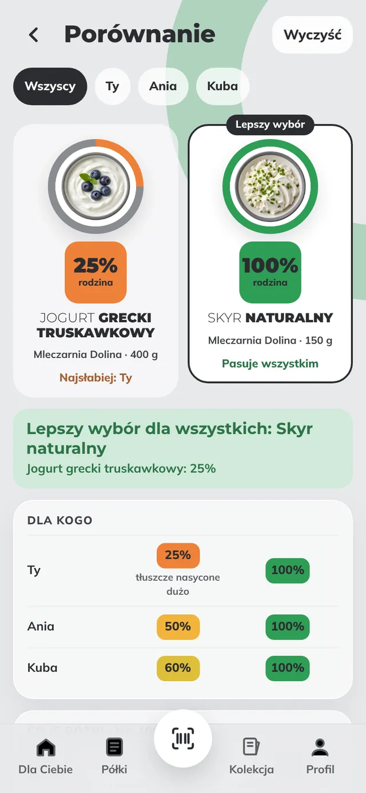
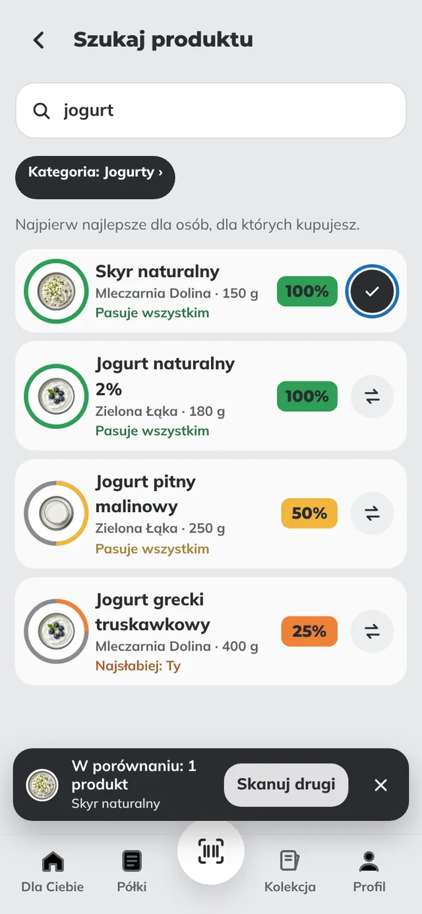
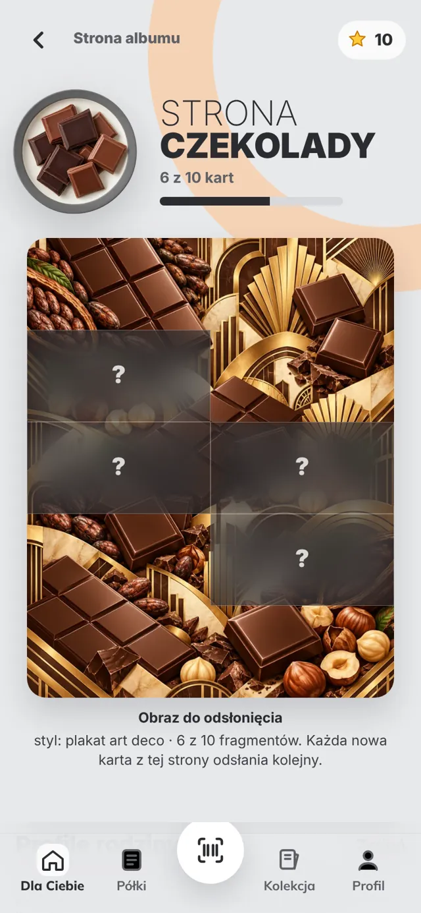

DLA RODZINY
Jeden wynik dla wszystkich, dla których kupujesz
Liczy się osoba, której produkt pasuje najsłabiej, więc gluten u jednej osoby nie zniknie w średniej. Kupujesz dziś tylko dla dziecka? Wyłącz pozostałych jednym stuknięciem.
Zeskanuj kod kreskowy i w 2 sekundy zobacz, czy produkt pasuje Tobie i Twoim bliskim: alergie, dieta, cukier, sól. Z wyjaśnieniem i lepszym zamiennikiem.
Liczy się osoba, której produkt pasuje najsłabiej, więc gluten u jednej osoby nie zniknie w średniej. Kupujesz dziś tylko dla dziecka? Wyłącz pozostałych jednym stuknięciem.
Zeskanuj oba i zobacz je obok siebie: wynik każdej osoby i to, co je różni. Najpierw to, czego pilnujecie.

Wpisz nazwę albo markę. Najlepsze produkty dla Twojej rodziny są na górze, te, które komuś nie pasują, na końcu z powodem.

Każda strona albumu to kategoria z warunkami do zdobycia, np. bez oleju palmowego albo dużo białka. Odsłaniasz plakat, zbierasz odznaki, a przy okazji uzupełniasz otwartą bazę produktów.

Skanowanie, wynik dla rodziny, wyjaśnienia, zamienniki, porównanie i wyszukiwanie są za darmo i takie zostaną, bez limitu skanów. Później dojdzie płatny pakiet Lupka Plus z wygodnymi dodatkami, np. rodzina na kilku telefonach, wspólna lista zakupów, kopia danych i powiadomienia o wycofanych produktach. Bez reklam i bez sprzedawania danych.
Nie. Lupka działa w przeglądarce telefonu. Możesz dodać ją do ekranu głównego jak aplikację: w Chrome „Zainstaluj aplikację”, na iPhonie Udostępnij → „Do ekranu początkowego”.
Z Open Food Facts, otwartej bazy tworzonej przez kupujących. Gdy czegoś brakuje, uzupełnisz to zdjęciem etykiety.
Zeskanuj go i dodaj w minutę. Dostaniesz punkty, a produkt zobaczą też inni.
Nie. Pomaga czytać etykiety i porównywać produkty. Przy alergii zawsze sprawdź też etykietę na opakowaniu.